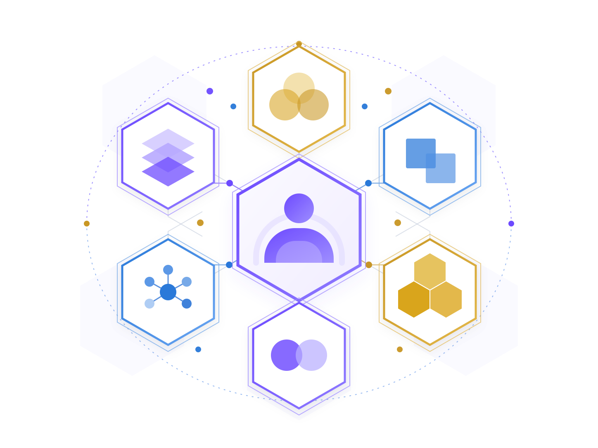

Who am I?
Identify whether you are working as an individual, team member, teacher, student, professional, or organizational leader.
AI-Augmented helps people and organizations use AI while preserving human judgment, responsibility, and expertise.

It means building a disciplined partnership between people and AI. People define the purpose, provide context, examine assumptions, validate important work, and remain accountable for the result.
AI can help with research, explanation, drafting, comparison, coordination, and pattern finding. Strong practice connects those capabilities to expertise, controls, and workflows that make responsibility visible.
Use these questions to orient yourself before choosing a domain, stage, or resource.
Identify whether you are working as an individual, team member, teacher, student, professional, or organizational leader.
Use the maturity model to describe the current condition of your capability, practice, evidence, and control.
Use AAOS to choose the next operating stage, from Diagnose through Scale, for a real workflow.
Choose Learn, Apply, or Augment based on whether you need understanding, tools, or guided implementation.
The best next step depends on where your work happens and what responsibility you carry.
Improve knowledge work, team decisions, governance, and organizational capability.
Explore BusinessSupport learning, teaching, assessment, and institutional practice.
Explore EducationUse AI with professional judgment, confidentiality, review, and client responsibility.
Explore LegalSupport clinical and health workflows with context, safety, and clear ownership.
Explore MedicalAI-Augmented Maturity helps describe where a person, team, or organization is today. AAOS provides the operating sequence for reliable work: Diagnose, Activate, Controls, Execute, Measure, and Scale.
These are separate dimensions. Maturity describes the condition of the work; AAOS describes how the work moves.
Choose the level of support that matches your next step.
Understand the concepts, vocabulary, and examples behind reliable human-AI work.
Start with LearnUse assessments, tools, and workflows on a defined task with human review.
Move to ApplyGet guided support for facilitation, implementation, governance, or operating design.
Find guided supportStart with a domain, choose the role closest to your work, and use the assessment to identify a practical next capability. Then test that capability in a real workflow and return to the framework as your practice develops.
Explore a teaching example, a team decision brief, or the resource directory.